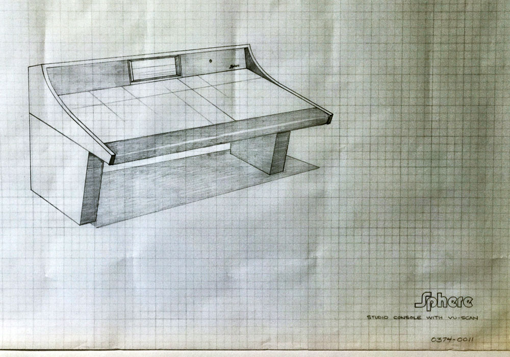

Ibanez PT-9 Phaser
Placeholder debug log for LFO and speed/width control issues, including testing of the speed-pot sweep from 12.0 to 400k ohms.
Placeholder archive for effects and stompbox repairs. These entries can later grow into fuller debug logs with parts, control measurements, enclosure notes, and reference photos.

Placeholder debug log for LFO and speed/width control issues, including testing of the speed-pot sweep from 12.0 to 400k ohms.
Placeholder entry for an op-amp-based distortion pedal using 748-type op-amps and diode clipping.
Placeholder note for an intermittent LED issue and a missing battery cover.
Placeholder folder entry with repair materials present, but specific debug notes still blank.
Return to the repairs landing page and move into another service lane.
Open repairs Directory 01Switch to the stringed instrument lane for setups, harnesses, and hardware work.
Open category Directory 02Move into the amplifier lane for power, reverb, and speaker-related repairs.
Open category